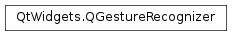

QGestureRecognizer¶
Note
This class was introduced in Qt 4.6.
Synopsis¶
Static functions¶
- def
registerRecognizer(recognizer) - def
unregisterRecognizer(type)
Detailed Description¶
The
PySide2.QtWidgets.QGestureRecognizerclass provides the infrastructure for gesture recognition.Gesture recognizers are responsible for creating and managing
PySide2.QtWidgets.QGestureobjects and monitoring input events sent toPySide2.QtWidgets.QWidgetandPySide2.QtWidgets.QGraphicsObjectsubclasses.PySide2.QtWidgets.QGestureRecognizeris the base class for implementing custom gestures.Developers that only need to provide gesture recognition for standard gestures do not need to use this class directly. Instances will be created behind the scenes by the framework.
For an overview of gesture handling in Qt and information on using gestures in your applications, see the Gestures in Widgets and Graphics View document.
Recognizing Gestures¶
The process of recognizing gestures involves filtering input events sent to specific objects, and modifying the associated
PySide2.QtWidgets.QGestureobjects to include relevant information about the user’s input.Gestures are created when the framework calls
PySide2.QtWidgets.QGestureRecognizer.create()to handle user input for a particular instance of aPySide2.QtWidgets.QWidgetorPySide2.QtWidgets.QGraphicsObjectsubclass. APySide2.QtWidgets.QGestureobject is created for each widget or item that is configured to use gestures.Once a
PySide2.QtWidgets.QGesturehas been created for a target object, the gesture recognizer will receive events for it in itsPySide2.QtWidgets.QGestureRecognizer.recognize()handler function.When a gesture is canceled, the
PySide2.QtWidgets.QGestureRecognizer.reset()function is called, giving the recognizer the chance to update the appropriate properties in the correspondingPySide2.QtWidgets.QGestureobject.
Supporting New Gestures¶
To add support for new gestures, you need to derive from
PySide2.QtWidgets.QGestureRecognizerto create a custom recognizer class, construct an instance of this class, and register it with the application by callingQGestureRecognizer.registerRecognizer(). You can also subclassPySide2.QtWidgets.QGestureto create a custom gesture class, or rely on dynamic properties to express specific details of the gesture you want to handle.Your custom
PySide2.QtWidgets.QGestureRecognizersubclass needs to reimplement thePySide2.QtWidgets.QGestureRecognizer.recognize()function to handle and filter the incoming input events forPySide2.QtWidgets.QWidgetandPySide2.QtWidgets.QGraphicsObjectsubclasses. Although the logic for gesture recognition is implemented in this function, you can store persistent information about the state of the recognition process in thePySide2.QtWidgets.QGestureobject supplied. ThePySide2.QtWidgets.QGestureRecognizer.recognize()function must return a value ofQGestureRecognizer.Resultthat indicates the state of recognition for a given gesture and target object. This determines whether or not a gesture event will be delivered to a target object.If you choose to represent a gesture by a custom
PySide2.QtWidgets.QGesturesubclass, you will need to reimplement thePySide2.QtWidgets.QGestureRecognizer.create()function to construct instances of your gesture class. Similarly, you may need to reimplement thePySide2.QtWidgets.QGestureRecognizer.reset()function if your custom gesture objects need to be specially handled when a gesture is canceled.See also
-
class
PySide2.QtWidgets.QGestureRecognizer¶ Constructs a new gesture recognizer object.
-
PySide2.QtWidgets.QGestureRecognizer.ResultFlag¶ This enum describes the result of the current event filtering step in a gesture recognizer state machine.
The result consists of a state value (one of Ignore, , , , ) and an optional hint ().
Constant Description QGestureRecognizer.Ignore The event does not change the state of the recognizer. QGestureRecognizer.MayBeGesture The event changed the internal state of the recognizer, but it isn’t clear yet if it is a gesture or not. The recognizer needs to filter more events to decide. Gesture recognizers in the state may be reset automatically if they take too long to recognize gestures. QGestureRecognizer.TriggerGesture The gesture has been triggered and the appropriate PySide2.QtWidgets.QGestureobject will be delivered to the target as a part of aPySide2.QtWidgets.QGestureEvent.QGestureRecognizer.FinishGesture The gesture has been finished successfully and the appropriate PySide2.QtWidgets.QGestureobject will be delivered to the target as a part of aPySide2.QtWidgets.QGestureEvent.QGestureRecognizer.CancelGesture The event made it clear that it is not a gesture. If the gesture recognizer was in GestureTriggered state before, then the gesture is canceled and the appropriate PySide2.QtWidgets.QGestureobject will be delivered to the target as a part of aPySide2.QtWidgets.QGestureEvent.QGestureRecognizer.ConsumeEventHint This hint specifies that the gesture framework should consume the filtered event and not deliver it to the receiver. See also
-
PySide2.QtWidgets.QGestureRecognizer.create(target)¶ Parameters: target – PySide2.QtCore.QObjectReturn type: PySide2.QtWidgets.QGestureThis function is called by Qt to create a new
PySide2.QtWidgets.QGestureobject for the giventarget(PySide2.QtWidgets.QWidgetorPySide2.QtWidgets.QGraphicsObject).Reimplement this function to create a custom
PySide2.QtWidgets.QGesture-derived gesture object if necessary.The application takes ownership of the created gesture object.
-
PySide2.QtWidgets.QGestureRecognizer.recognize(state, watched, event)¶ Parameters: - state –
PySide2.QtWidgets.QGesture - watched –
PySide2.QtCore.QObject - event –
PySide2.QtCore.QEvent
Return type: PySide2.QtWidgets.QGestureRecognizer.ResultHandles the given
eventfor thewatchedobject, updating the state of thegestureobject as required, and returns a suitable result for the current recognition step.This function is called by the framework to allow the recognizer to filter input events dispatched to
PySide2.QtWidgets.QWidgetorPySide2.QtWidgets.QGraphicsObjectinstances that it is monitoring.The result reflects how much of the gesture has been recognized. The state of the
gestureobject is set depending on the result.See also
QGestureRecognizer.Result- state –
-
static
PySide2.QtWidgets.QGestureRecognizer.registerRecognizer(recognizer)¶ Parameters: recognizer – PySide2.QtWidgets.QGestureRecognizerReturn type: PySide2.QtCore.Qt.GestureTypeRegisters the given
recognizerin the gesture framework and returns a gesture ID for it.The application takes ownership of the
recognizerand returns the gesture type ID associated with it. For gesture recognizers which handle customPySide2.QtWidgets.QGestureobjects (i.e., those which returnQt.CustomGesturein aQGesture.gestureType()function) the return value is a generated gesture ID with theQt.CustomGestureflag set.
-
PySide2.QtWidgets.QGestureRecognizer.reset(state)¶ Parameters: state – PySide2.QtWidgets.QGestureThis function is called by the framework to reset a given
gesture.Reimplement this function to implement additional requirements for custom
PySide2.QtWidgets.QGestureobjects. This may be necessary if you implement a customPySide2.QtWidgets.QGesturewhose properties need special handling when the gesture is reset.
-
static
PySide2.QtWidgets.QGestureRecognizer.unregisterRecognizer(type)¶ Parameters: type – PySide2.QtCore.Qt.GestureTypeUnregisters all gesture recognizers of the specified
type.
© 2018 The Qt Company Ltd. Documentation contributions included herein are the copyrights of their respective owners. The documentation provided herein is licensed under the terms of the GNU Free Documentation License version 1.3 as published by the Free Software Foundation. Qt and respective logos are trademarks of The Qt Company Ltd. in Finland and/or other countries worldwide. All other trademarks are property of their respective owners.